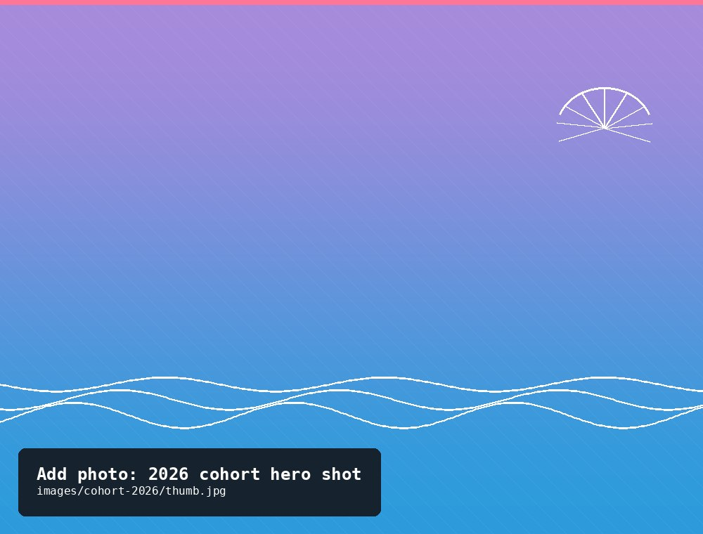
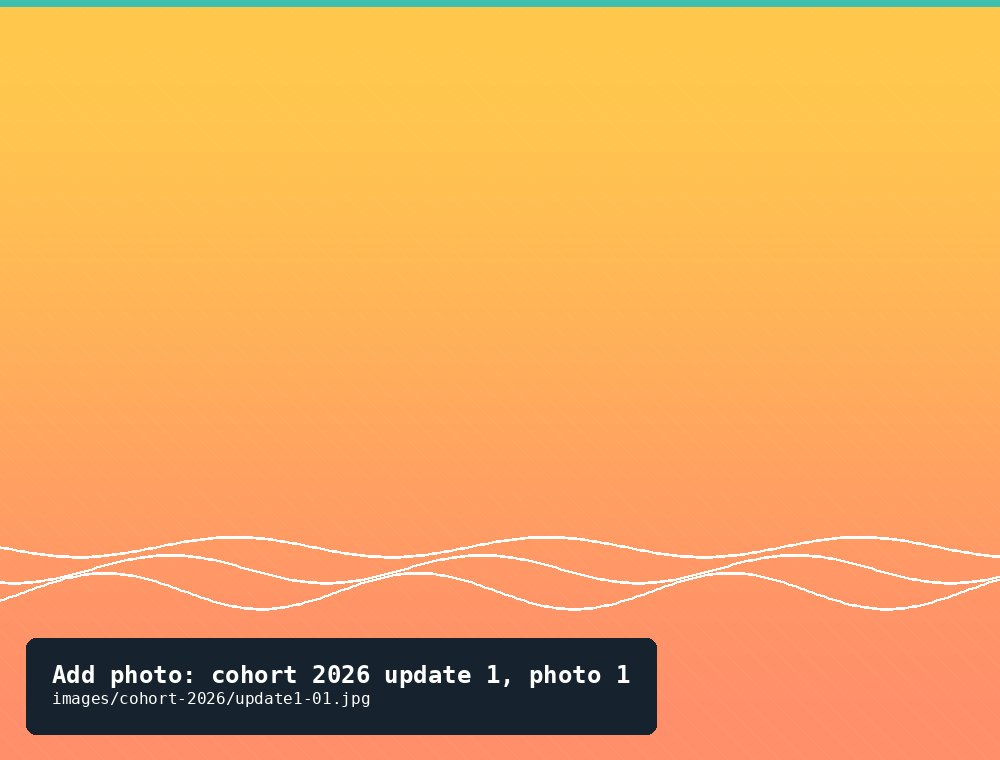
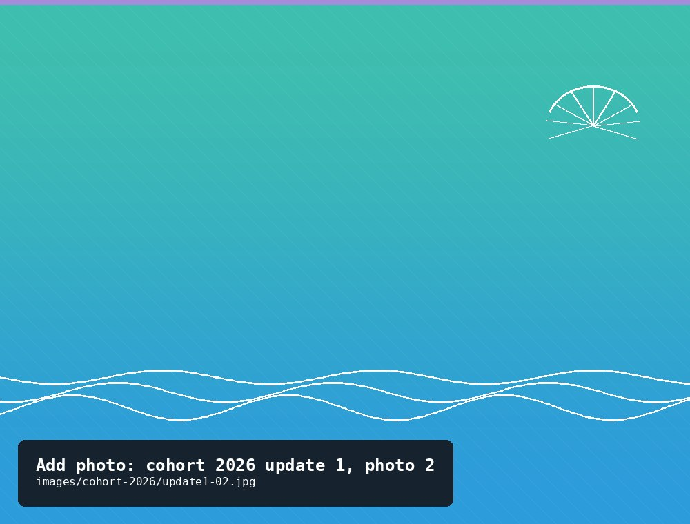
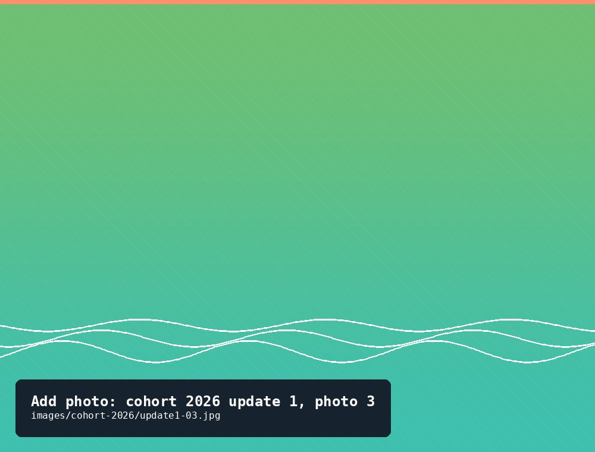
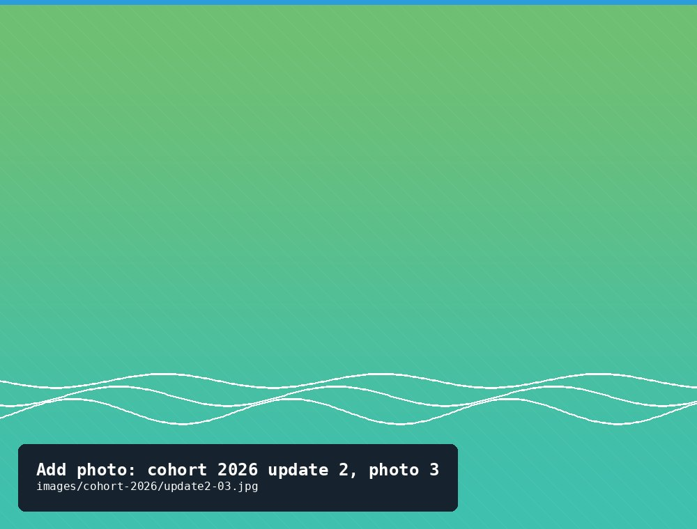
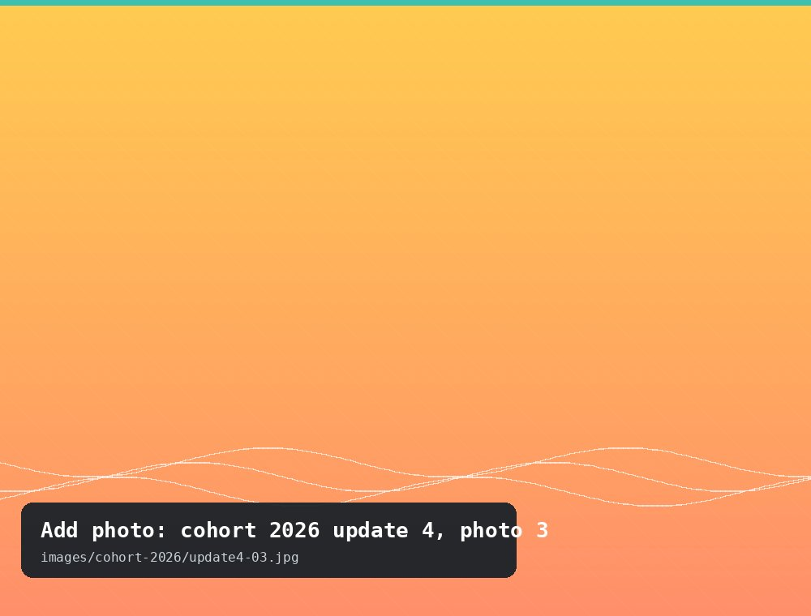

Started with 500 spat in May 2026 — the garden's newest and current cohort.
Update log
First check-in for the 2026 spat, the day they were purchased from Darryl. Still tiny — I could hold all of them in my hands.
None.
None.
None.



First check-in for the 2026 spat, about four weeks after they arrived. Still tiny but growing. Only lost one spat.
Overall, floats were pretty clean.
None.
Some growth is noticeable already.

Floats have been checked regularly, but this is the first time since mid-June that we did full counts. We separated some of the larger oysters onto a different float, and unfortunately the float broke open — we lost 78 oysters.
Overall, floats were pretty clean.
A weird, skinny fish that looked like a little gar — likely an Atlantic needlefish.
Zip ties on the new float broke, and we lost 78 oysters.
Floats have been checked regularly, but this is the first time since mid-June that we did full counts. We separated some of the larger oysters onto a different float, and unfortunately the float broke open — we lost 78 oysters.
Overall, floats were pretty clean.
Lots of bay nettles (Chrysaora chesapeakei).
Zip ties gave us trouble again, but this time no oysters were lost.
